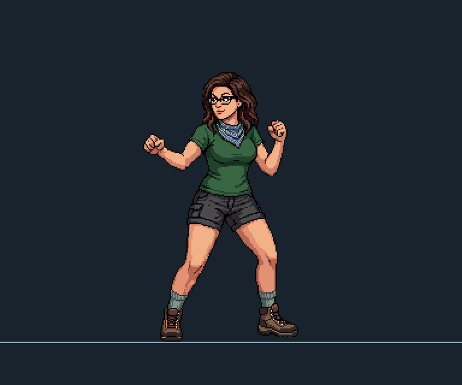

Moving right · option 1
→

Original generated frame order.
Proposed pairing: option 1 while moving right; option 2 while moving left. The two loops use the same generated frames, with option 2 played in reverse order.
Original generated frame order.

Same frames with the playback order reversed.
Review-only pairing. The game currently uses one walk animation for either movement direction. A runtime version would select the sequence from movement direction while keeping the fighter's facing controlled by the opponent. No walk has been integrated or approved yet.